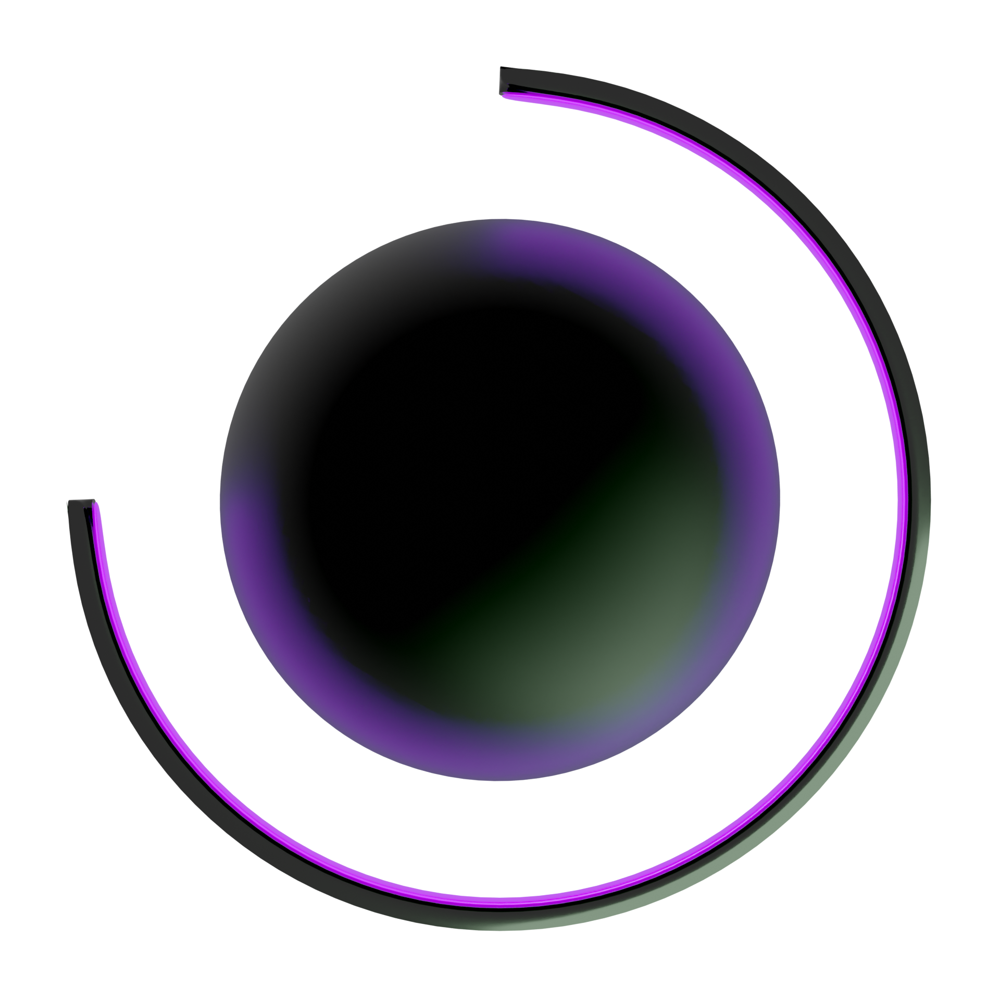

About Me
Who am I?
I'm Albert Romero, a computer science student with a strong interest in delving into the world of cybersecurity and mechanics, the latter for more hobby-related reasons. I'm passionate about problem-solving and continuous learning. I enjoy working in teams and facing challenges that allow me to grow both personally and professionally.
Professional Objective
My goal is to achieve excellent training in cybersecurity and the development of microcomputer systems and networks. I seek to gain practical experience in professional environments through an internship where I can apply my knowledge and continue learning. I aspire to contribute significantly to innovative projects and collaborate in the development of technological solutions that have a positive impact on society.
Languages
English
Catalan
Spanish
Personal Projects
BlackSphere
BlackSphere is a joint web project with a friend. In this project, we propose a company for creating and updating servers on the Discord platform. We are designing and developing a platform that aims to provide resources and content related to cybersecurity for students and professionals in the sector. Our goal is to create a space where users can learn, share knowledge, and stay informed about the latest trends in the field of computer security.